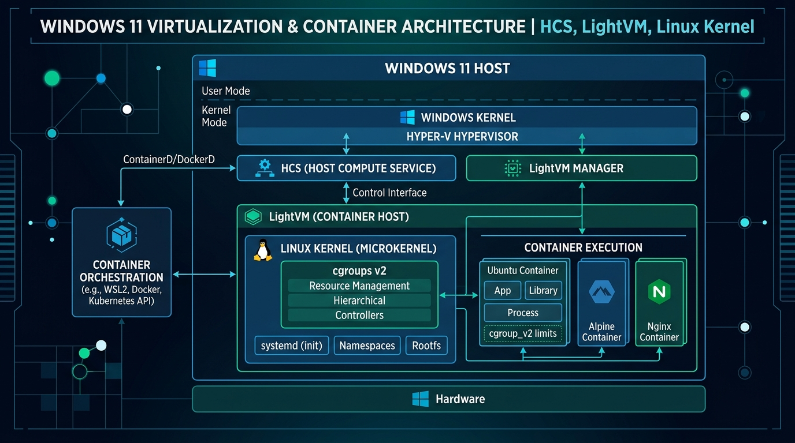

Docker on Windows with WSL 2: What Actually Happens Under the Hood

For years, running Linux containers on Windows meant accepting a series of heavy abstractions. Early solutions relied on VirtualBox or Hyper-V virtual machines running full Linux guest operating systems. Later, Docker Desktop abstracted this complexity behind a tray application, but the underlying mechanisms remained opaque to many engineers.
With Windows Subsystem for Linux 2 (WSL 2) and the recent addition of Native WSL Containers (wslc.exe in WSL 2.9.3+), Microsoft has fundamentally rewritten how Linux code executes on Windows workstations. Rather than running a traditional heavy VM or requiring third-party background daemons, modern Windows containerization leverages lightweight utility microVMs, direct Linux kernel cgroups, and native OCI image layers.
In this technical deep dive, we trace the exact execution path from a Windows PowerShell invocation down to kernel namespaces, process isolation, VirtioFS I/O layers, and container execution.
1. The Architectural Stack: Windows → Kernel → Container
When you initiate a container on Windows, the request traverses three core boundaries:
+-----------------------------------------------------------------------+
| WINDOWS 11 HOST |
| [ VS Code ] [ Edge Browser ] [ PowerShell ] [ Win32 App ] |
+-----------------------------------------------------------------------+
|
Hyper-V Host Compute Service (HCS) Lightweight MicroVM
|
+-----------------------------------------------------------------------+
| WSL 2 UTILITY VM |
| +-----------------------------------------------------------------+ |
| | CUSTOM MICROSOFT LINUX KERNEL | |
| | Namespaces (PID, NET, MNT) cgroups v2 /dev/dxg | |
| +-----------------------------------------------------------------+ |
| | |
| +------------------------+------------------------+ |
| | | |
| v v |
| +------------------------------+ +-------------------+ |
| | Docker Engine / containerd | | Native WSL (wslc) | |
| +------------------------------+ +-------------------+ |
| | | |
| v v |
| +-----------------------------------------------------------------+ |
| | RUNNING CONTAINERS | |
| | [ Nginx ] [ Node.js API ] [ PostgreSQL ] | |
| +-----------------------------------------------------------------+ |
+-----------------------------------------------------------------------+1. Hyper-V LightVM Initialization: WSL 2 does not run full Hyper-V virtual machine instances with fixed allocated RAM. Instead, it utilizes Hyper-V Socket (HV-Socket) communication and the Host Compute Service (HCS) to spawn a dynamic utility VM in milliseconds.
2. Shared Unified Kernel: All WSL 2 Linux distributions (Ubuntu, Debian, Alpine) share a single Linux kernel instance compiled by Microsoft. Memory is dynamically returned to the Windows host when Linux processes release it.
3. Namespace & cgroup v2 Enclosure: Containers are not virtual machines within WSL 2. A container running inside WSL 2 is simply a standard Linux process isolated using Linux namespaces (for PID, network, and mount isolation) and cgroups v2 (for CPU and memory caps).
2. Native WSL Containers (wslc) vs. Docker Desktop
| Feature / Dimension | Native WSL Containers (wslc) | Docker Desktop on Windows |
| --- | --- | --- |
| Installation Model | Built into WSL (wsl --update --pre-release) | Standalone installer, background daemon, GUI client |
| Licensing & Cost | 100% Free & Open Source (Apache 2.0) | Paid subscription required for enterprise teams |
| Resource Footprint | Zero extra daemon overhead; uses dynamic WSL RAM pool | Heavier background footprint (Electron UI + daemon) |
| CLI Syntax | Mirrors Docker CLI (wslc run, wslc ps, wslc build) | Standard Docker CLI (docker run, docker ps) |
| Image Compatibility | Standard OCI images (Docker Hub, GHCR, ACR) | Standard OCI images & Docker Hub integration |
| Programmatic Integration | Native C# / .NET NuGet (Microsoft.WSL.Containers) | Docker Engine REST API socket wrapper |
| GPU Passthrough | Direct /dev/dxg DirectX / CUDA passthrough | Requires Docker Desktop GPU configuration setting |
3. The Filesystem Bottleneck: /mnt/c/ vs /home/user/
One of the most frequent performance complaints from Windows developers is slow git status execution, sluggish npm install times, or failing hot-reloading watchers inside containers. Almost without exception, this is caused by filesystem location.
SLOWNESS HIGHWAY (Cross-OS Translation):
Windows NTFS (C:\Users\dev\my-app)
---> 9P / VirtioFS Protocol Translation
---> WSL 2 Mount Point (/mnt/c/Users/dev/my-app)
---> Container Bind Mount
RESULT: ~10x-20x slower I/O for heavy node_modules / git operations.
MAXIMUM PERFORMANCE PATH (Native Linux VHDX):
WSL 2 Native ext4 VHDX (/home/dev/projects/my-app)
---> Direct Linux Kernel Virtual Block Device
---> Container Bind Mount
RESULT: Near-native Linux I/O throughput (~3,000+ IOPS).
Engineering Rule of Thumb: Never mount project code stored under
C:\into Linux containers. Always clone repositories into the native WSL filesystem at/home/username/projects/.
4. Hands-On CLI Walkthrough with wslc
Step 1: Enable WSL Pre-Release Track
# Update WSL to pre-release build
wsl --update --pre-release
# Verify installed WSL kernel version
wsl --version
Step 2: Build and Execute via wslc
# 1. Build the OCI container image
wslc build -t wslc-python-demo .
# 2. List locally built images
wslc image ls
# 3. Launch container in background with host port mapping 8080
wslc run -d --rm -p 8080:8080 --name web-service wslc-python-demo
# 4. Verify running container status
wslc container ps
# 5. Test endpoint from Windows browser or PowerShell
curl http://localhost:8080
5. Programmatic Container Management with C# / .NET
using System;
using System.Threading.Tasks;
using Microsoft.WSL.Containers;
namespace StackScout.WslDemo;
internal class Program
{
static async Task Main(string[] args)
{
Console.WriteLine("Connecting to WSL Container Subsystem...");
using var session = new WslContainerSession();
string imageName = "python:3.11-slim";
await session.PullImageAsync(imageName, new ImagePullProgress(p =>
{
Console.WriteLine($"[Pull Status]: {p.Percentage}% - {p.Status}");
}));
var createOptions = new ContainerCreateOptions
{
Image = imageName,
Name = "embedded-wsl-runner",
EnableGpu = true,
PortMappings = { new PortMapping(HostPort: 8080, ContainerPort: 80) }
};
using var container = await session.CreateContainerAsync(createOptions);
await container.StartAsync();
Console.WriteLine($"Container running successfully (ID: {container.Id})");
}
}
6. Summary & Recommendations
1. Store your code in WSL native filesystem: Keep repositories inside /home/username/projects/ to unlock maximum ext4 VHDX filesystem performance.
2. Evaluate Native WSL Containers (wslc): For teams seeking zero-cost, lightweight container management without enterprise licensing friction, wslc provides a native open-source alternative.
3. Leverage VS Code Remote - WSL: Run your IDE frontend on Windows while attaching directly to Linux toolchains inside WSL 2.
Frequently Asked Questions (FAQ)
What is the core takeaway of this guide?
This guide establishes production patterns and verifiable architecture standards designed to eliminate engineering friction, improve reliability, and optimize system performance.
How can teams implement these patterns safely?
Start by auditing your current pipeline, applying clear boundaries, enforcing verification commands on disk, and introducing automated checks gradually.
Where can I find additional technical reference code?
Check the StackScout open-source repository on GitHub for full runnable code samples, architecture benchmarks, and continuous deployment configurations.
Zero Trust Architecture for AI Agents in Istio and Kubernetes
Securing autonomous AI agents in Kubernetes using Istio service mesh, SPIFFE/SPIRE identities, mTLS, and egress control.
Read article →Instatic CMS: The Complete Technical Guide
Instatic CMS is a self-hosted visual CMS that outputs clean static HTML. Learn its architecture, deployment options, and how it compares to Webflow and WordPress.
Read article →